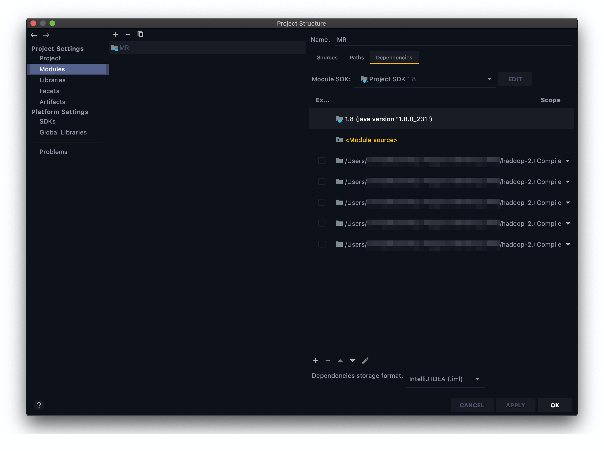
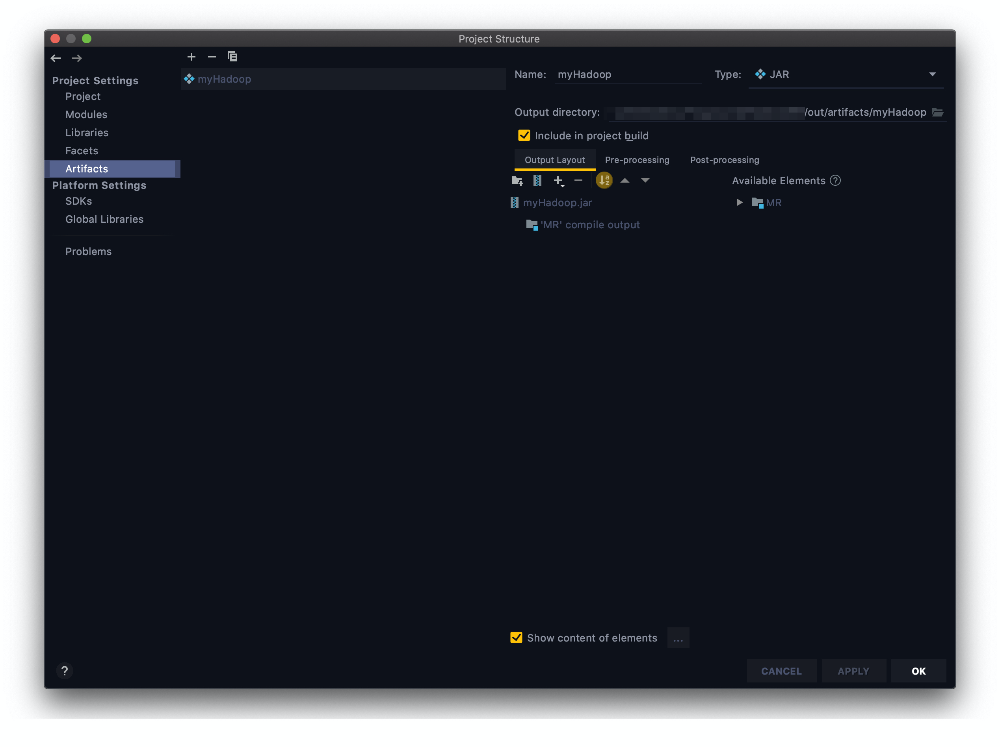
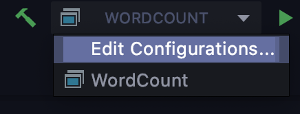
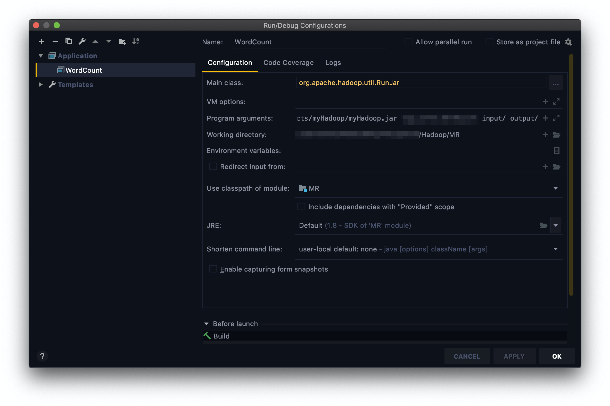

在之前的数篇笔记中我们从零开始完成了 Hadoop 分布式集群的搭建。从这一篇笔记开始，我们要通过 MapReduce 计算框架的学习和实践，将集群转化为生产力。
本篇是系列的第一篇笔记。本篇笔记中我们将会手写一个 WordCount 程序。
手写 WordCount
Hadoop 本地开发环境配置
我们的程序必须封装成 JAR 包才能提交给 Hadoop 运行。通过打包、上传再运行的方式来测试代码是很令人烦躁的。因此我们要在本地搭建一个 Hadoop 开发环境。以后的代码可以先在本地使用少量数据进行测试，然后再提交到集群运行。我的开发环境基于 Intellij 和 JDK 1.8，使用的是 Mac 操作系统。
添加 Modules
打开 File 下的 Project Structures，选择左侧边栏中的 Modules 标签，向项目添加 Hadoop JAR 包。JAR 包的位置在 hadoop 安装目录下的/share/hadoop文件夹内。点击窗口下方的小加号，选择JARs or directories，将以下文件夹添加到项目中：
- common
- hdfs
- mapreduce
- yarn
- common/lib
添加完成后的效果如图：

设置 Artifacts
选择左侧边栏中的 Artifacts 标签。点击中栏的加号选择JAR -> Empty。为 JAR 包取一个名字。接着点击右侧 output layout 下方的加号，选择Module output，选择当前项目。完成后的效果如图：

保存并关闭设置窗口。
如何运行程序
点击图片中的位置（位于窗口上边栏中部），选择Edit Configurations。

在弹出的窗口中点击左上方的加号，然后点击 Application。

为配置起一个名字。然后在右侧填写项目运行的一些参数。在Main Class中填写org.apache.hadoop.util.RunJar。Working directory选择当前项目目录。

Program arguments中可以根据需要填写程序运行使用的参数。参数使用空格隔开。首先填写 JAR 包所在位置和 main 函数所在的类。前者填写项目根目录/out/artifacts/myHadoop/myHadoop.jar。而后者要根据稍后代码实际情况进行填写。
JAR 包位置要根据你的 JAR 包名称灵活修改
后两个参数对应输入和输出数据的位置。这里直接写成/input和/output。这两个参数将作为args[0]和args[1]传入程序中。稍后运行程序前，我们要在项目根目录下创建 input 文件夹，并将数据放入其中。
每次运行程序前要将 output 文件夹删除，除非你的代码中有检查并删除输出目录的部分
WordCount
新建 Package 和 Class 的步骤在此省略，我们直接进入代码部分。
MyWordCount
1
2
3
4
5
6
7
8
9
10
11
12
13
14
15
16
17
18
19
20
21
22
23
24
25
26
27
28
29
30
31
32
33
34
35
36
37
38
39
40
41
42
43
44
45
| import org.apache.hadoop.conf.Configuration;
import org.apache.hadoop.fs.Path;
import org.apache.hadoop.io.IntWritable;
import org.apache.hadoop.io.Text;
import org.apache.hadoop.mapreduce.Job;
import org.apache.hadoop.mapreduce.lib.input.FileInputFormat;
import org.apache.hadoop.mapreduce.lib.output.FileOutputFormat;
import java.io.IOException;
public class MyWordCount {
public static void main(String[] args) throws IOException, ClassNotFoundException, InterruptedException {
Configuration conf = new Configuration();
Job job = Job.getInstance(conf);
job.setJobName("my word count job");
job.setJarByClass(MyWordCount.class);
Path inPath = new Path(args[0]);
FileInputFormat.addInputPath(job, inPath);
Path outPath = new Path(args[1]);
if(outPath.getFileSystem(conf).exists(outPath)) {
outPath.getFileSystem(conf).delete(outPath, true);
}
FileOutputFormat.setOutputPath(job, new Path(args[1]));
job.setOutputKeyClass(Text.class);
job.setOutputValueClass(IntWritable.class);
job.setMapperClass(MyMapper.class);
job.setReducerClass(MyReducer.class);
System.exit(job.waitForCompletion(true) ? 0 : 1);
}
}
|
MyMapper
1
2
3
4
5
6
7
8
9
10
11
12
13
14
15
16
17
18
19
20
21
| import org.apache.hadoop.io.IntWritable;
import org.apache.hadoop.io.Text;
import org.apache.hadoop.mapreduce.Mapper;
import java.io.IOException;
import java.util.StringTokenizer;
public class MyMapper extends Mapper<Object, Text, Text, IntWritable> {
private final static IntWritable one = new IntWritable(1);
private Text word = new Text();
public void map(Object key, Text value, Context context) throws IOException, InterruptedException {
StringTokenizer itr = new StringTokenizer(value.toString());
while(itr.hasMoreTokens()) {
word.set(itr.nextToken());
context.write(word, one);
}
}
}
|
MyReducer
1
2
3
4
5
6
7
8
9
10
11
12
13
14
15
16
17
18
19
20
| import org.apache.hadoop.io.IntWritable;
import org.apache.hadoop.io.Text;
import org.apache.hadoop.mapreduce.Reducer;
import java.io.IOException;
public class MyReducer extends Reducer<Text, IntWritable, Text, IntWritable> {
private IntWritable result = new IntWritable();
public void reduce(Text key, Iterable<IntWritable> values, Context context) throws IOException, InterruptedException {
int sum = 0;
for (IntWritable val : values) {
sum += val.get();
}
result.set(sum);
context.write(key, result);
}
}
|
运行程序
在项目根目录下创建 input 文件夹。在其中随便放置一个文本文件。点击图片中的锤子标志 Build Project。然后点击三角标志运行。